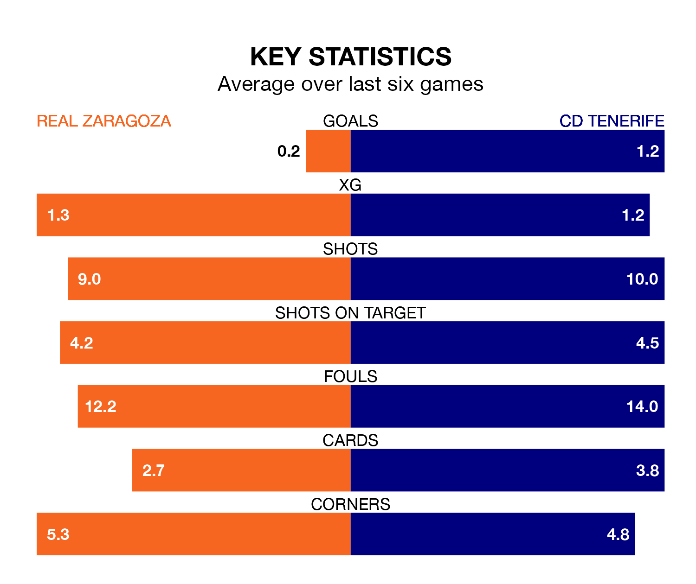

Real Zaragoza are on a terrible run ahead of hosting CD Tenerife at Estadio de la Romareda on Sunday, with just two points collected from their last six games.
Zaragoza have picked up two draws and four losses in their last six Segunda División games, and face a Tenerife side whose last six games have brought two wins and three draws.
In the last 10 years, Zaragoza and Tenerife have played each other on 19 occasions. Zaragoza won six of them, Tenerife seven, and they drew six times.
On average, Zaragoza scored 0.9 goals and Tenerife 0.8 in those matches.
Their last meeting was on August 26, when Zaragoza won 1-0 away.
In Juan Soriano Oropesa, Tenerife can rely on one of the league's safest pair of hands. He has kept 13 clean sheets in his 32 appearances this season, and only two other 'keepers – SD Huesca's Álvaro Fernández and Leganés's Diego Conde – have been able to prevent the opposition scoring on more occasions in the Segunda División.
In Zaragoza's net, Cristian Darío Álvarez has five clean sheets in 10 games.
The hosts are 15th in the table after 32 games, of which they have won nine and drawn 11, earning 38 points.
The away team are three places ahead of Zaragoza in 12th, with 11 wins and nine draws putting them on 42 points.
With 28 goals in 32 games so far this season, Zaragoza are scoring at below the league average rate with 0.9 goals per game. But they are conceding fewer than average too, letting in 29 goals at a rate of 0.9 per game.
Tenerife are also below average scorers, with 0.9 goals per game, compared to a league average of 1.1. They have conceded 1.0 goal per game.
Zaragoza's last match was on Sunday, a 0-0 draw against Mirandés.
Tenerife drew 1-1 with RCD Espanyol last time out, on March 23, with Sergio González Martínez on the scoresheet.
Updated: 12:16 (UTC), 25/03/24